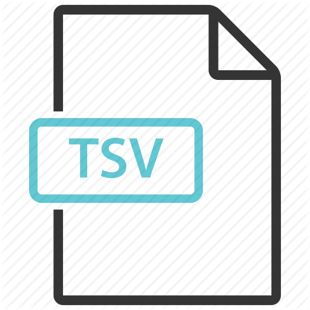

Source Code & Report
 GitHub repository for the front-end code of this website
M.Eng report for this project
GitHub repository for the front-end code of this website
M.Eng report for this project
Data Files
- alltalks.json that contains all seminar information that generates the homepage and the word cloud
- topic_counts.json that generates the donut graph
-  month_total.json that generates the bar chart
Algorithm
- We are using some magic to get all seminar information...
A List of Our Seminar Sources
- Cornell Univeristy
- Standford University
Thanks to...
- Angular.js for the website framework
- D3.js for the data visualization
- Jason Davies' Word Cloud Generator (https://www.jasondavies.com/wordcloud)
- dbuezas’s Pie chart labels (http://bl.ocks.org/dbuezas/9306799)
- mbostock’s Bar Chart (http://bl.ocks.org/mbostock/3885304)
Contacts
Jiankun Lu, jl3387 cornell edu